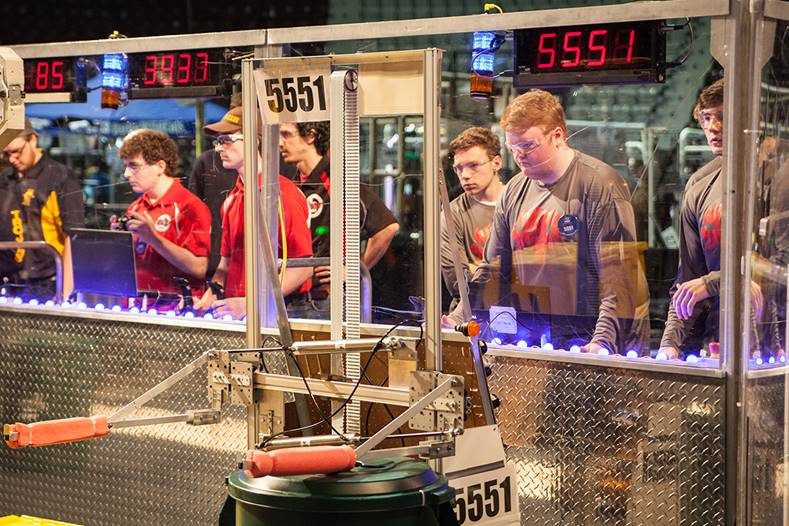

FIRST strongly believes in the potential for true change to occur as a result of participation in an FRC event. As such, it encourages judges to see all teams as having won by having created a robot that can participate in the tournament. FIRST also believes that there are benefits to maximizing the distribution of awards among the competitors so as to encourage as many as possible. Judges should look hard before awarding teams multiple Judged awards.
